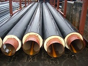

Общество с ограниченной ответственностью «Гомельский завод теплоизолированных труб» было зарегистрировано решением Гомельского областного исполнительного комитета №616 от 22.09.2004 г. В Едином государственном реестре юридических лиц и предпринимателей за №490320867. Основным направлением применения ресурсосберегающих технологий, избранных предприятием, является снижение теплопотерь при внедрении в практику строительства тепловых сетей с использованием предварительно изолированных (ПИ) труб с пенополиуретановой (ППУ) изоляцией.
Стратегия развития предприятия. (сделать как ссылку на переход на другую страницу. ниже текста выше который) Стратегия развития предприятия состоит в расширении деятельности по производству труб, теплоизолированных пенополиуретаном, как одного из очень перспективных продуктов на белорусском рынке строительных материалов. Высокий уровень качества будет обеспечиваться за счет использования высокопроизводительного оборудования, качественного сырья и соответствующей требованиям подготовки и квалификации специалистов. Складывающаяся обстановка на рынке строительных материалов показывает нарастающий спрос на данную продукцию, однако этот спрос не всегда является платежоспасобным. Т.е. у коммунальных и строительных предприятий отсутствует достаточное количество оборотных средств, а при постоянно растущей потребности в этом виде продукта происходит потребление продукции более низкого качества. При этом можно отметить, что цена на обыкновенные трубы, а также теплоизолированные минеральной ватой отличаются незначительно.